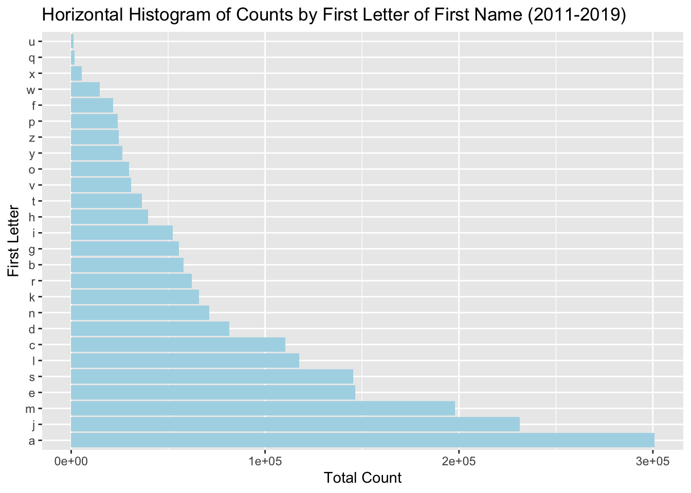
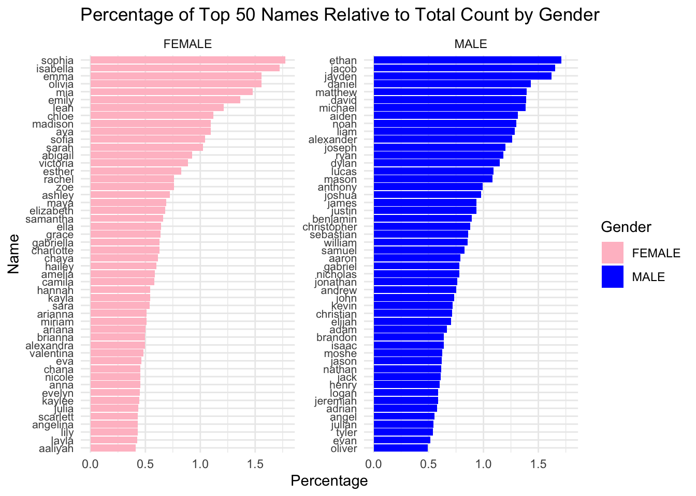
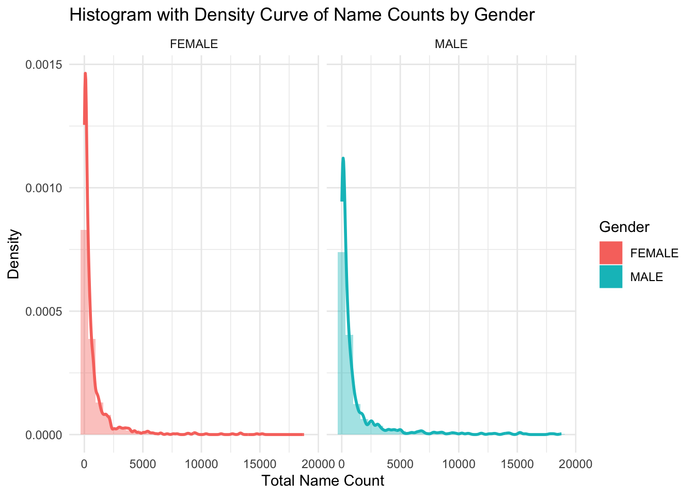
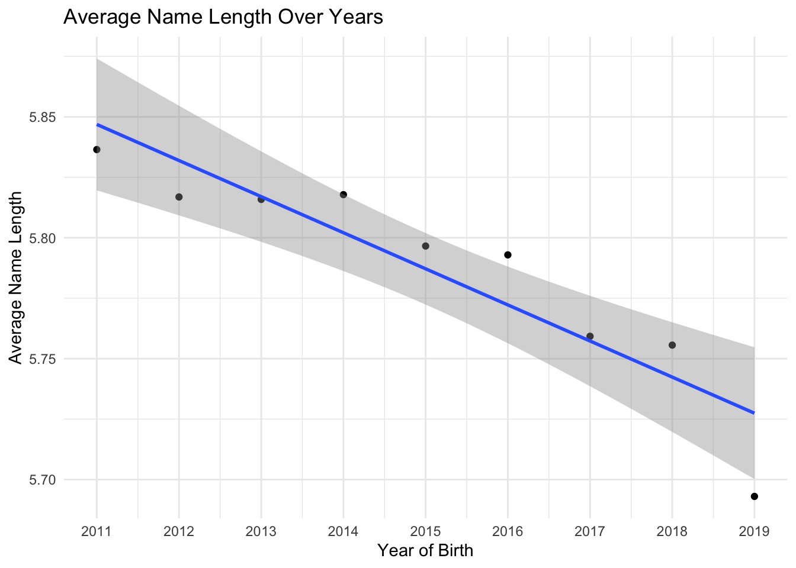
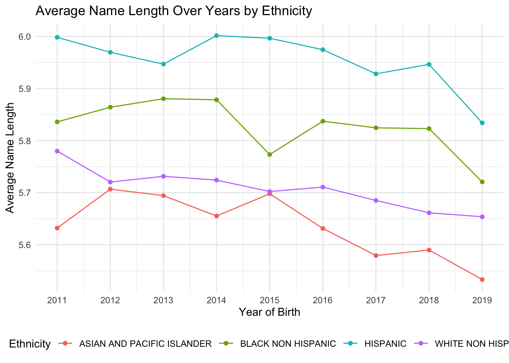
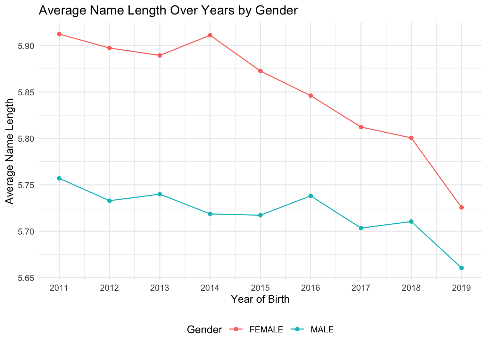
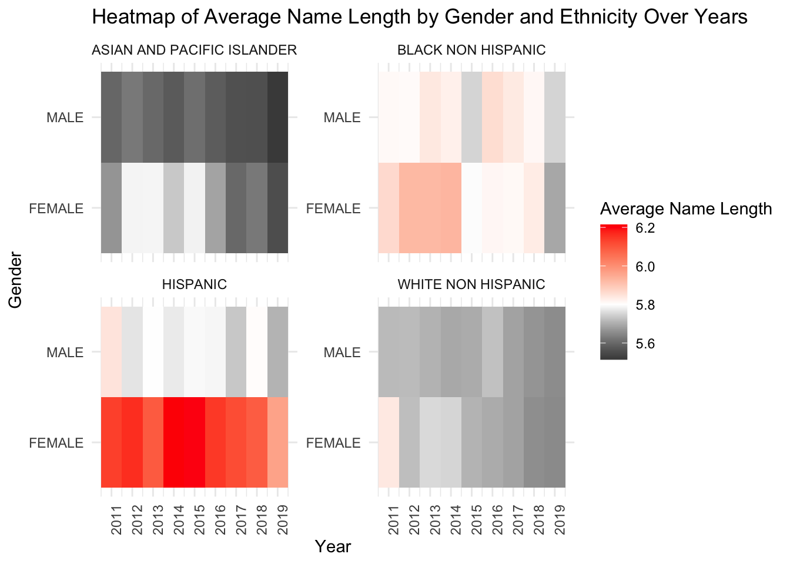

data <-read.csv("Popular_Baby_Names.csv")combined_data <- data %>%mutate(Ethnicity =case_when(grepl("BLACK NON HISP", Ethnicity) ~"BLACK NON HISPANIC",grepl("WHITE NON HISP", Ethnicity) ~"WHITE NON HISPANIC",grepl("ASIAN AND PACI", Ethnicity) ~"ASIAN AND PACIFIC ISLANDER",TRUE~ Ethnicity )) %>%mutate(Child.s.First.Name =tolower(Child.s.First.Name)) %>%group_by(Year.of.Birth, Child.s.First.Name, Gender, Ethnicity) %>%summarize(Total_Count =sum(Count), .groups="drop") %>%arrange(Year.of.Birth, desc(Total_Count))head(combined_data, 10)
# A tibble: 10 × 5
Year.of.Birth Child.s.First.Name Gender Ethnicity Total_Count
<int> <chr> <chr> <chr> <int>
1 2011 jayden MALE HISPANIC 2130
2 2011 isabella FEMALE HISPANIC 1986
3 2011 justin MALE HISPANIC 1860
4 2011 jacob MALE HISPANIC 1818
5 2011 michael MALE WHITE NON HISPANIC 1752
6 2011 joseph MALE WHITE NON HISPANIC 1686
7 2011 matthew MALE HISPANIC 1656
8 2011 david MALE WHITE NON HISPANIC 1548
9 2011 angel MALE HISPANIC 1518
10 2011 christopher MALE HISPANIC 1434
3.2 For the Overall and Within-Group Popularity of Names
3.2.1 Faceted histogram for name counts by ethnicity
Code
ggplot(combined_data, aes(x=Total_Count)) +geom_histogram(bins=30, fill="blue", color="black") +facet_wrap(~Ethnicity, scales ="free_y") +labs(x="Total Count of Names", y="Frequency", title="Faceted Histogram of Name Counts by Ethnicity") +theme_minimal() +theme(axis.text.x =element_text(angle =90, hjust =1))
The above histograms show the distribution of the total count of names within different ethnic groups in this dataset. Each small plot (facet) represents a different ethnic group.The x-axis shows the range of the total counts for names. This is how many times a particular name appears in dataset. The y-axis shows the frequency, which is the number of names that fall within each bin of the total counts. For example, if there’s a bar reaching up to 150 on the y-axis at the 500 mark on the x-axis, this means there are 150 different names that have a total count of around 500 in that ethnic group.All histograms show a right-skewed distribution. This means that most names within each ethnic group have a relatively low count, while a few names have a very high count. In other words, there is a diverse range of name popularity across ethnic groups, with most names being relatively rare (low count), and a few names being very common (high count).
3.2.2 Boxplot to compare the distribution of name popularity by different years
Code
ggplot(combined_data, aes(x=as.factor(Year.of.Birth), y=Total_Count)) +geom_boxplot() +labs(x="Year of Birth", y="Total Count of Names", title="Boxplot of Name Popularity by Year of Birth") +theme(axis.text.x =element_text(angle =45, hjust =1))
The boxplots compare the distribution of name popularity by year of birth.Each box represents a year from 2011 to 2019. The Y-axis represents the count of how often each name occurs. A higher count indicates more popularity.The years 2011-2014 show greater variability in the total counts of names, as indicated by the longer boxes and whiskers. This suggests there was a wider disparity in name popularity during these years.Years 2015-2019 show less variability with much shorter boxes and whiskers, indicating that name popularity was more consistent within these years — fewer names with very high or very low counts.
3.2.3 Ridgeline plot for name popularity across different years
Code
ggplot(combined_data, aes(x=Total_Count, y=as.factor(Year.of.Birth), fill=as.factor(Year.of.Birth))) +geom_density_ridges() +labs(x="Total Count of Names", y="Year of Birth", title="Ridgeline Plot of Name Popularity Across Years")
Picking joint bandwidth of 10.8
The distribution of name counts for each year is skewed to the right, meaning there are a few names with very high counts and many with lower counts.The peak of the ridges appears to shift slightly from year to year, indicating changes in the popularity distribution of names.Some years, like 2018, show a narrower peak, which could suggest a more uniform distribution of name popularity for that year compared to others. We can see ridges of 2011-2014 are much wider than others at the base, it suggests a greater variety of names with lower counts for those years (consistent conclusion with box plot).
3.2.4 Check the distribution of First letter of First name
Store each first name’s first letter in column First_Letter
# A tibble: 10 × 2
First_Letter Total_Count
<chr> <int>
1 a 300756
2 b 57961
3 c 110384
4 d 81661
5 e 146610
6 f 21707
7 g 55640
8 h 39644
9 i 52483
10 j 231395
Order the Total_Count by descending order
Code
# Order the data frame by Count in descending orderfirst_letter_counts <- first_letter_counts[order(-first_letter_counts$Total_Count),]head(first_letter_counts, 10)
# A tibble: 10 × 2
First_Letter Total_Count
<chr> <int>
1 a 300756
2 j 231395
3 m 198012
4 e 146610
5 s 145342
6 l 117731
7 c 110384
8 d 81661
9 n 71296
10 k 65935
Code
ggplot(first_letter_counts, aes(x=reorder(First_Letter, -Total_Count), y=Total_Count)) +geom_bar(stat="identity", fill='lightblue') +coord_flip() +# This will flip the axes to make the histogram horizontalxlab("First Letter") +ylab("Total Count") +ggtitle("Horizontal Histogram of Counts by First Letter of First Name (2011-2019)")

This horizontal histogram shows the frequency of the first letter of first names spanning the years 2011 to 2019 in NYC.From the plot, we can see the first letter ‘a’ is the longest, indicating it is the most common first letter for a first name in this dataset. Conversely, the letter ‘u’ has the shortest bar, indicating it is the least common starting letter for first names in this dataset.
gender_letter_counts$Gender <-factor(gender_letter_counts$Gender, levels =c("FEMALE", "MALE"))gender_letter_counts$First_Letter <-as.character(gender_letter_counts$First_Letter)# Calculate a sorting metric, like the median total count for each first letter within each gendersorting_metric <- gender_letter_counts %>%group_by(First_Letter, Gender) %>%summarize(Median_Total_Count =median(Total_Count)) %>%ungroup()
`summarise()` has grouped output by 'First_Letter'. You can override using the
`.groups` argument.
Code
# Add a sorting order to the data frame based on the median total countgender_letter_counts <- gender_letter_counts %>%left_join(sorting_metric, by =c("First_Letter", "Gender")) %>%mutate(Sort_Order =rank(-Median_Total_Count)) %>%arrange(Gender, Sort_Order)# Now create the Cleveland dot plotggplot(gender_letter_counts, aes(x = Total_Count, y =reorder(First_Letter, Sort_Order), color = Gender)) +geom_point() +scale_color_manual(values =c("FEMALE"="grey", "MALE"="black")) +theme_minimal() +labs(x ="Total Count", y ="First Letter", title ="Cleveland Dot Plot of First Letter by Gender (2011-2019)") +theme(panel.grid.major.x =element_blank(),panel.grid.minor.x =element_blank(),panel.grid.major.y =element_line(color="grey90"),axis.text.x =element_text(angle =90, vjust =0.5, hjust=1))
The above plot is a Cleveland dot plot, which displays the frequency of the first letter of first names, separated by gender for the years 2011-2019. The letter ‘a’ has a high count for both genders, but it is notably higher for males (black dot) than for females (grey dot).The plot allows for easy comparison between genders for each letter. A letter with dots that are far apart indicates a larger disparity between the number of males and females with names starting with that letter.
3.3 For Comparing the Diversity of Names Between Genders
3.3.1 Bar graph for top 50 popular names by gender
Code
# Filter for top 50 names per gendername_freq_by_gender <- combined_data %>%group_by(Gender, Child.s.First.Name) %>%summarise(Total_name_count =sum(Total_Count)) %>%ungroup() %>%arrange(Gender, desc(Total_name_count))
`summarise()` has grouped output by 'Gender'. You can override using the
`.groups` argument.
ggplot(top_names_percentage, aes(x =reorder(Child.s.First.Name, Percentage), y = Percentage, fill = Gender)) +geom_bar(stat ="identity", position ="dodge") +labs(title ="Percentage of Top 50 Names Relative to Total Count by Gender",x ="Name",y ="Percentage") +theme_minimal() +facet_wrap(~ Gender, scales ="free_y", ncol =2) +coord_flip() +theme(axis.text.y =element_text(size =8)) +scale_fill_manual(values =c("pink", "blue"))

We plot the top 50 popular names of each gender. The x-axis is the perctange of people with this name in female or male. The y-axis is the name. Comparing row by row, we can see that male name at each row have a higher percentage in total male name count compared to female name at the same row, meaning that more male have the same name comparing to female. This may indicate that male names have less diversity comparing to female names.
3.3.2 The percentage of top 50 names takes up per gender
# A tibble: 2 × 2
Gender Sum_Percent
<chr> <dbl>
1 FEMALE 37.8
2 MALE 45.8
From the summarize table, we can also see that these top 50 female names represent 37.79% of all female names, while top 50 male names represent 45.75% of all male name. This means that male names are more concentrated within certain names, showing that female name is more diverse than male names.
3.3.3 Histogram with density curve for name counts by gender
Code
ggplot(name_freq_by_gender, aes(x = Total_name_count, y = ..density..)) +geom_histogram(aes(fill = Gender), alpha =0.4, bins =30, position ="identity") +geom_density(aes(color = Gender), size =1) +facet_wrap(~ Gender) +labs(title ="Histogram with Density Curve of Name Counts by Gender",x ="Total Name Count", y ="Density") +theme_minimal()

The x-axis of the histogram shows the name count for each name within each gender, and the y-axis represents the frequency of names falling into each count range. Using density curve here provides a smooth estimate of the distribution. Both histogram show a right skewed pattern, meaning that most of the names have relatively lower counts. It shows that there are more female names with lower counts than male names, and female name has a slightly longer tails, meaning that female names have a wider variety.
3.4 For the trends of Length of the Names over years across gender and ethnicity
3.4.1 Scatter Plot of Average Name Length Over Years
ggplot(avg_name_length, aes(x = Year.of.Birth, y = Average_Length)) +geom_point() +geom_smooth(method ="lm") +scale_x_continuous(breaks =seq(min(avg_name_length$Year.of.Birth), max(avg_name_length$Year.of.Birth), by =1)) +theme_minimal() +labs(title ="Average Name Length Over Years", x ="Year of Birth", y ="Average Name Length")
`geom_smooth()` using formula = 'y ~ x'

We plot the average length of names each year and from the plot we can see that the average length of names is decreasing from 2011 to 2013, then slightly increase in 2014 and then decreases from 2016 to 2019, with the largest decrease from 2018 to 2019.
3.4.2 Scatter Plot of Average Name Length by each Ethnicity over years
Code
ggplot(avg_name_length_by_ethnicity, aes(x = Year.of.Birth, y = Average_Length, color = Ethnicity)) +geom_point() +geom_line() +scale_x_continuous(breaks =seq(min(avg_name_length_by_ethnicity$Year.of.Birth),max(avg_name_length_by_ethnicity$Year.of.Birth), by =1)) +theme_minimal() +labs(title ="Average Name Length Over Years by Ethnicity",x ="Year of Birth",y ="Average Name Length") +theme(legend.position ="bottom")

From the plot, x-axis is the year of birth, with y-axis showing average name length and colored lines represent each ethnicity. We can see that Hispanic has the longest average name length overall, Asian and pacific islander has the lowest average name length. The trend of average name length across each Ethnicity is decreasing over years.
3.4.3 Scatter Plot of Average Name Length by each Gender over years
Code
ggplot(avg_name_length_by_gender, aes(x = Year.of.Birth, y = Average_Length, color = Gender)) +geom_point() +geom_line() +scale_x_continuous(breaks =seq(min(avg_name_length_by_gender$Year.of.Birth),max(avg_name_length_by_gender$Year.of.Birth), by =1)) +theme_minimal() +labs(title ="Average Name Length Over Years by Gender",x ="Year of Birth",y ="Average Name Length") +theme(legend.position ="bottom")

From the plot, x-axis is the year of birth, with y-axis showing average name length and colored lines represent each gender. We can see that female has higher average name length than male from 2011-2019. The overall trend of average name length for both male and female is decreasing.
3.4.4 Heatmap of Average Name Length by Gender and Ethnicity Over Years
`summarise()` has grouped output by 'Year.of.Birth', 'Gender'. You can override
using the `.groups` argument.
Code
# Create the heatmapggplot(avg_name_length_data, aes(x = Year.of.Birth, y = Gender, fill = Average_Length)) +geom_tile() +facet_wrap(~ Ethnicity, scales ="free_y") +scale_fill_gradient2(low ="black", mid ="white", high ="red", midpoint =5.8) +labs(title ="Heatmap of Average Name Length by Gender and Ethnicity Over Years",x ="Year", y ="Gender", fill ="Average Name Length") +scale_x_continuous(breaks =seq(min(avg_name_length_data$Year.of.Birth), max(avg_name_length_data$Year.of.Birth), by =1)) +theme_minimal() +theme(axis.text.x =element_text(angle =90, hjust =1))

The x-axis represents Year of Birth and the y-axis shows Gender, then faceted by Ethnicity and fill with the average name length with low in black, high in red color. From the heatmap, we can see that male Asian and Pacific Islander has the lowest average name length over years, female Hispanic has the longest average name length over years comparing to all. It’s worth notifying that female white NonHispanic has high name average name length in 2011 but then keep decreasing to 2019. Same for female black NonHispanic, who had relatively long average name length from 2011 to 2016 and then drop to relatively low in 2019. This sudden changes may related to some socioeconomic change. The average name length of Asian and Pacific Island seem to be all slightly below overall average name length.